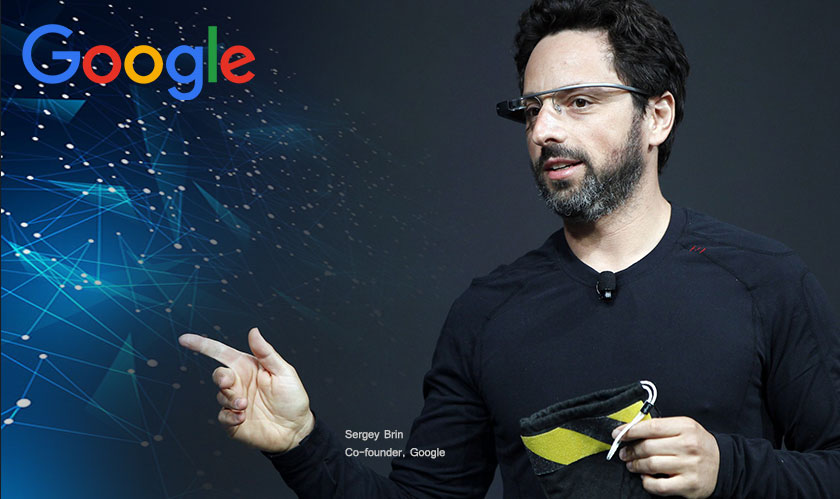

Sergey Brin

Trong suốt nhiều năm trời, nhiều người vẫn thường nhầm lẫn hai chàng trai Larry Page và Sergey Brin.
Anh chàng nào là Larry Page? Có phải Sergey Bin là người có giọng địa phương không?
Sở dĩ có sự nhầm lẫn trên cũng là điều dễ hiểu bởi hai chàng trai này có chiều cao gần bằng nhau, cùng có phong cách nhẹ nhàng và cả hai đều thuộc tuýp người nội tâm nhưng sống có đam mê – kiểu tính cách đặc trưng của những người đam mê công nghệ.
Trong nhiều năm, họ nhận được nhiều lời cảm ơn vì đã trở thành hai ngôi sao trong cuộc báo thù đỉnh cao của những người mọt sách – họ không chỉ chinh phục được các cô gái mà thực sự họ đã làm chủ thế giới; thế giới thông tin mà họ đã chọn làm đích đến ngay từ những ngày đầu.
Khi cả hai gặp nhau lần đầu tại Đại học Stanford vào tháng Ba năm 1995. Page, khi đó 22 tuổi, đến tham quan trường để đưa ra quyết định đăng ký nhập học. Còn Brin lúc đó mới 21 tuổi, đang là sinh viên cao học tài năng, được phân công đưa Page đi một vòng quanh trường. Trong buổi gặp đầu tiên ấy, người ta đồn thổi rằng họ đã bất đồng về mọi thứ. Bất chấp điều đó, ngay sau khi Page đăng ký chương trình tiến sĩ, cặp đôi này bắt đầu hợp tác trong một dự án về công cụ tìm kiếm tên là BackRub.
Page muốn tải toàn bộ nội dung trên mạng về máy tính để nghiên cứu phục vụ cho bài tiểu luận của mình. Anh tự tin nói với giáo sư của mình rằng anh chỉ cần một tuần để làm được việc đó. Tính toán sai lầm này (cho tới cuối năm đó, anh mới chỉ tải được một phần rất nhỏ) đã dẫn tới sự ra đời của Google – một trong những công ty sáng tạo và “phá cách” nhất trên thế giới. Cùng lúc đó, Sergey Brin cũng đang thu hút sự chú ý của mọi người với việc sáng tạo ra chương trình phần mềm để định dạng ngôn ngữ đánh dấu.
Tự nhận mình là “đứa trẻ học đại học”, Page thực sự đã được nuôi lớn trong môi trường đại học. Ông Carl, cha của anh, là một giáo sư chuyên ngành Khoa học vi tính tại Đại học Michigan. Cả cha mẹ anh đều có niềm đam mê với công nghệ và máy tính, riêng cha anh sau đó đã có ba tấm bằng từ Đại học Michigan cho bộ môn này. Do vậy, con trai của hai người hiển nhiên đã trưởng thành trong một thế giới mà máy tính hiện hữu ở khắp nơi. Page nhớ lại: “Máy tính đặt ở khắp nơi trong nhà và tôi là đứa bé đầu tiên trong lớp nộp bài tập được gõ trên máy tính.”
Cùng lúc đó, ở một nơi cách bang Michigan nửa vòng trái đất, chàng trai Sergey Brin cũng bắt đầu chuyến phiêu lưu của mình trong lĩnh vực máy tính. Được sinh ra ở Nga trong một gia đình gốc Do Thái, cha của Sergey là ông Michael Brin luôn có ước mơ trở thành nhà du hành vũ trụ nhưng ông đã bị các trường đại học danh tiếng nhất từ chối vì nạn bài Do Thái. Ông chuyển sang nghiên cứu toán học tại Đại học Moscow. Họ sống trong một căn hộ gồm có ba phòng với diện tích chỉ hơn 30m2, cùng với bà nội của Sergey. Vào năm Sergey lên sáu tuổi, cả gia đình di cư đến Mỹ. Khi lấy thị thực để rời khỏi Nga, cả cha và mẹ của Sergey đều bị mất việc.
Năm 1979, gia đình anh chuyển đến Maryland. Ông Michael Brin trở thành giáo sư khoa toán trường Đại học Maryland. Giống như cha của Page, ông luôn hun đúc tình yêu toán học cho cậu con trai. Brin là một sinh viên giỏi và tốt nghiệp với tấm bằng danh dự của Đại học Maryland. Khi tình yêu với khoa học máy tính của anh lớn dần, anh nghĩ tới việc chuyển đến California ở bờ Tây, nơi ngành công nghiệp máy tính phát triển mạnh mẽ nhất.
Sau khi cả hai gặp nhau ở Đại học Stanford, họ nhanh chóng trở thành những người bạn. Dự án “Tổ chức lại thông tin trên thế giới, tăng cường tiếp cận thông tin ở cấp độ toàn cầu và khiến thông tin trở nên hữu dụng” của Page nhanh chóng thu hút được sự quan tâm của khoa Máy tính. Brin tham gia dự án này cùng với bạn và đến mùa thu năm 1977, họ đặt tên công cụ tìm kiếm đầu tiên là BackRub. Cái tên tất nhiên không tồn tại lâu. Sau vài ngày thảo luận ý tưởng, họ quyết định chọn tên Google, được đặt theo thuật ngữ số học googol, có nghĩa là số 1 với một trăm số 0 đứng sau nó. Với cái tên mới, Google được sử dụng trước hết bởi những người ở Đại học Stanford và lịch sử được bắt đầu từ đấy. Một năm sau, họ chuyển công ty tới nhà để xe của một người bạn, theo sau bước chân của hai nhà doanh chủ xuất thân từ Stanford cũng rất nổi tiếng là Bill Hewlett và Dave Packard (hai nhà đồng sáng lập Công ty Máy tính HP).
Page và Brin thực sự là những người tự tay làm nên tất cả. Họ vay hết ba khoản tín dụng, gom góp thêm ít tiền mượn của bạn bè và mọi người trong khoa để mua ba máy chủ đặt đằng sau một chiếc xe tải. Sau đó, họ được người đồng sáng lập Hãng Sun Microsystems để ý tới và viết cho một ngân phiếu trị giá 100 nghìn đô-la. Có ít nhất năm công cụ tìm kiếm nổi bật vào thời điểm đó. Nhưng điểm khiến Google trở nên khác biệt và giúp nó nhanh chóng cho ra kết quả chính xác là phương thức hoạt động: Page và Brin đã viết một thuật toán để xử lý cấu trúc các đường liên kết của mạng Internet dựa trên nguyên lý là thông tin càng có nhiều đường dẫn liên kết vào thì trang thông tin trong đó càng quan trọng.
Từ năm 1998 đến năm 2001, Page giữ chức CEO của Google cho tới khi Eric Schmidt, cựu kỹ sư trưởng của Sun Microsystem và cựu CEO của Novell, được tuyển về để nắm giữ chức vụ này. Schmidt đã đưa Google trở thành công ty đại chúng vào năm 2004 và giúp công ty phát triển nhanh đến chóng mặt. Vào năm cuối cùng trong cương vị CEO của Schmidt, lợi nhuận của Google vượt mốc 29 tỷ đô-la và lợi nhuận ròng là 8,5 tỷ đô-la. Với hơn 28 nghìn nhân viên, Google là một trong những câu chuyện khởi nghiệp thành công nhất. Đầu năm 2011, Page trở lại Google với vai trò CEO, trong khi Brin tiếp tục tập trung vào việc phát triển sản phẩm.
Về những ngày đầu tiên
Page: Ban đầu, chúng tôi không hề có ý định tạo lập một công cụ tìm kiếm. Cuối năm 1995, tôi bắt đầu thu thập các đường dẫn trên mạng vì giáo sư hướng dẫn và tôi nghĩ việc này là cần thiết. Chúng tôi không biết chính xác sẽ làm gì với nó nhưng dường như không có ai thực sự để tâm đến các đường dẫn trên web – cũng như việc trang nào được liên kết với trang nào. Thông tin trên mạng khi đó giống như mạng nhện vậy. Tôi cho rằng mình có thể vừa nghiên cứu vừa tạo ra thứ gì đó thú vị và hữu ích. Đó chính là động lực ban đầu của tôi.
Tôi bắt đầu bằng việc lần ngược trở lại theo các đường dẫn. Khi đó, tôi muốn tìm kiếm những người liên kết với trang chủ của Trường Stanford (có khoảng mười nghìn người). Vậy thì câu hỏi là bạn sẽ muốn trình bày những đường dẫn nào nếu bạn chỉ được thể hiện mười đường dẫn và chúng tôi đã chọn cách xếp hạng các đường dẫn dựa trên chính các đường dẫn khác. Rồi chúng tôi nghĩ: “Việc này thật sự thú vị đây. Công cụ này thực sự hiệu quả. Chúng ta nên dùng nó để tìm kiếm thông tin.” Vậy là tôi bắt đầu phát triển công cụ tìm kiếm. Sergey cũng tham gia việc này từ rất sớm, vào cuối năm 1995 hay đầu năm 1996. Cậu ấy rất quan tâm đến phần khai thác thông tin. Chúng tôi đơn giản chỉ nghĩ rằng: “Bằng cách này, chúng ta có thể tạo ra một công cụ tìm kiếm tốt hơn rất nhiều.”
Về việc quản lý một công ty ở độ tuổi rất trẻ
Page: Tôi cho rằng đây là một vấn đề thật sự. Tuổi trẻ lại là điều bất lợi khi bạn phải quản lý nhiều người, tuyển dụng họ và tất cả những công việc điều hành khác. Tất nhiên, những thứ tôi thiếu vào thời điểm đó là những điều người ta có thể từ từ có được qua thời gian. Nếu bạn làm quản lý nhân sự trong 20 năm chẳng hạn, bạn sẽ học hỏi được rất nhiều. Vào thời đó, tôi thực sự thiếu kinh nghiệm và đó là một vấn đề. Nhưng tôi đã cố gắng bù đắp nhược điểm đó bằng cách hiểu được mọi chuyện sẽ đi về đâu, tạo lập tầm nhìn cho tương lai và đã bắt đầu chuẩn bị cho sự ra đời của công ty từ ba năm trước cả khi công ty thực sự bắt đầu. Tôi đã làm việc rất chăm chỉ suốt 24 tiếng một ngày. Tôi hiểu khá rõ về tất cả các khía cạnh trong công việc. Tôi cho rằng những việc đó đã bù đắp được ít nhiều cho việc tôi thiếu kỹ năng ở các lĩnh vực khác.
Về việc định hình ý tưởng khởi nghiệp
Page: Bạn có biết đến cảm giác bừng tỉnh trong đêm sau một giấc mơ rất sống động không? Và nếu bạn không có bút chì hay mẩu giấy trên giường để ngay lập tức viết ra, ý tưởng đó sẽ hoàn toàn biến mất vào sáng hôm sau. Tôi đã có giấc mơ như vậy khi tôi 23 tuổi. Khi đột nhiên tỉnh giấc, tôi đã nghĩ rằng, nếu chúng ta có thể tải toàn bộ thông tin trên Internet thì sao, chỉ cần giữ lại các đường liên kết và… Tôi vớ lấy cây bút và bắt đầu viết. Đôi khi bạn phải tỉnh dậy và thôi mơ mộng. Tôi dành phần còn lại của đêm đó để viết ra các chi tiết và thuyết phục bản thân rằng giấc mơ đó có thể trở thành hiện thực.
Rồi tôi nói với thầy Terry Winogard, người hướng dẫn tôi thực hiện đề tài luận án, rằng chỉ mất vài tuần để tải các liên kết trên mạng về. Ông ấy gật đầu tỏ vẻ hiểu và thừa biết sẽ mất nhiều thời gian hơn thế, nhưng ông cũng đủ khôn ngoan để không nói ra ngay với tôi. Sự lạc quan của tuổi trẻ thường bị đánh giá thấp. Thật tuyệt vời vì trước đó tôi còn không hề nghĩ đến việc tạo ra một công cụ tìm kiếm. Ý tưởng đó chưa từng xuất hiện trong suy nghĩ của tôi. Nhưng sau đó, tình cờ chúng tôi nghĩ ra cách tốt hơn: Xếp hạng các trang web để tạo ra một công cụ tìm kiếm hữu hiệu. Vậy là Google ra đời. Khi một giấc mơ vĩ đại xuất hiện, hãy nắm bắt nó ngay!
Lời khuyên cho những người sắp khởi nghiệp
Đừng vội mong muốn sự ổn định. Điều cực kỳ quan trọng là bạn phải bắt đầu công ty với đúng người. Tôi không thể nói hết tầm quan trọng của việc này. Tôi luôn cực kỳ hạnh phúc với sự có mặt của các thành viên ở Google, với người bạn đồng sáng lập và Eric. Chúng tôi đã mất rất nhiều thời gian để tìm được họ. Mất một năm chúng tôi mới có được Eric. Những cộng sự tuyệt vời là những người bạn thật sự thích và phù hợp với bạn – đây là hai điều vô cùng quan trọng. Bạn sẽ không bao giờ phải hoài nghi về việc phải hy sinh một số điều nếu bạn có được những cộng sự tuyệt vời.
Một điều nữa mà tôi thật sự may mắn có được là những chuyên gia thật sự. Chúng tôi đã cùng nhau phát triển ý tưởng cho Google trong rất nhiều năm ở Stanford trước khi bắt đầu gây dựng công ty. Đó là một xuất phát điểm tốt. Chúng tôi hiểu rõ về tất cả các khía cạnh trong lĩnh vực tìm kiếm. Chúng tôi trò chuyện với tất cả các công ty hoạt động trong lĩnh vực này. Chúng tôi thực sự hiểu rất rõ tình hình. Và bạn có thể thực hiện tất cả những việc đó mà không tốn quá nhiều tiền, chỉ cần bạn bỏ công sức lao động ra. Bạn có thể đầu tư thời gian từ một đến hai năm để học hỏi một điều gì đó thật kỹ càng trước khi bạn tuyển hàng trăm con người về cùng làm việc với mình.
Tôi từng tham dự một hội thảo về kỹ năng lãnh đạo ở bang Michigan nơi tôi sinh ra và họ có một khẩu hiệu rất hay: “Hãy coi nhẹ những điều bất khả thi một cách hợp lý.” Câu này có nghĩa bạn nên đặt mục tiêu mà bạn không chắc chắn mình có thể đạt được nhưng vẫn là kiểu mục tiêu hợp lý. Dĩ nhiên, bạn không muốn những mục tiêu hoàn toàn vô lý. Một điều tôi đã không nhận ra trước khi sáng lập Google đó là việc đặt ra những mục tiêu tham vọng thường dễ hơn rất nhiều. Mọi người thường chọn những điều rất cụ thể để làm vì họ nghĩ chúng dễ đạt được hơn. Nếu bạn càng cụ thể, bạn càng có ít nguồn lực hơn. Vấn đề bạn cần cân nhắc không phải là bạn có thể có được bao nhiêu nguồn lực. Câu hỏi bạn cần đặt ra là: Bạn có thể tạo ra điều gì với những việc bạn đang làm, những thứ đó có ý nghĩa không và thực sự bạn có lợi thế nào hay không?
Vì vậy, hãy chọn một vấn đề khó để giải quyết. Đó cũng là lý do tại sao một công ty được trả tiền để làm những điều mà người khác không thể làm được. Đừng sợ những việc khó. Chúng sẽ giúp bạn có được lực đẩy lớn hơn.
Cuối cùng, đừng chạy theo phong trào. Rất nhiều công ty vẫn được khai sinh chỉ vì một lĩnh vực nào đó có vẻ hấp dẫn. Thực lòng, tôi không nghĩ đó là lý do tốt để thành lập một công ty. Trong thực tế, đã có hàng trăm, thậm chí hàng nghìn người đến và đề nghị chúng tôi thương mại hóa một điều gì đó hoặc muốn chúng tôi hợp tác làm ăn với họ. Chúng tôi thực sự đã xem xét những đề nghị này và cá nhân tôi cũng cân nhắc một số lời đề nghị. Tôi ước tính một năm chỉ có cùng lắm một lời đề nghị khiến chúng tôi cảm thấy hứng thú. Cái khó nằm ở chỗ đề xuất của bạn phải khiến người ta cảm thấy có hứng thú vì nó là một ý tưởng tốt chứ không thể giống hệt cả ngàn ý tưởng khác được. Nếu bạn có một thương vụ tốt hoặc bạn có ý tưởng tuyệt vời và thực sự hiểu lĩnh vực mà mình đang bước vào thì môi trường đầu tư không phải là vấn đề lớn. Lĩnh vực đó có hấp dẫn hay không cũng không thành vấn đề. Tôi đảm bảo bạn có thể tìm được người sẵn sàng giúp đỡ bạn.
Giữ nguyên tinh thần sáng tạo khi phát triển đến quy mô lớn
Brin: Tôi luôn nghĩ rằng chúng tôi không những cần bảo tồn văn hóa của mình mà phải luôn cải thiện và củng cố văn hóa ấy. Quy mô của công ty thay đổi mang tới nhiều thách thức và cả cơ hội. Ví dụ, hãy nhìn vào cơ sở hạ tầng chúng tôi dành cho các phòng liên quan đến máy tính. Nếu chúng tôi muốn thực hiện một thử nghiệm, chúng tôi có thể hoàn thành nó trong vài giờ đồng hồ. Việc này thực sự mở ra các cơ hội mới. Đồng thời, bạn phải đảm bảo rằng quy mô thay đổi sẽ không ảnh hưởng đến khả năng sáng tạo của bạn. Chúng tôi đã đạt được điều này khi thực hiện việc chia tách công ty ra thành các bộ phận riêng. Chúng tôi tuân theo quy tắc 70-20-10. Khoảng 70% công sức được đầu tư vào các lĩnh vực chủ chốt của công ty, 20% để tham gia trong các lĩnh vực chuyển tiếp và mở rộng, còn khoảng 10% được đầu tư vào những lĩnh vực mới. Khi chúng tôi mở rộng các sản phẩm và dịch vụ, việc thực hiện 10% này ngày càng trở nên khó khăn hơn. Nhưng tôi nghĩ rằng bạn cần phải để mọi người thật sự sáng tạo và tư duy cởi mở. Thử thách thật sự trong việc mở rộng quy mô công ty là cung cấp những dịch vụ được phát triển một cách liền lạc đến người sử dụng, bởi vì tôi cũng như mọi người, tất cả chúng ta đều có năng lực giới hạn khi đưa ra quyết định lựa chọn giữa khoảng 50 sản phẩm khác nhau. Chúng tôi đang nỗ lực chuyển trọng tâm phát triển từ sản phẩm sang các tính năng để củng cố chất lượng của những sản phẩm hiện tại thay vì cố gắng tạo ra những sản phẩm hoàn toàn mới.
Về sự bất đồng ý kiến giữa các thành viên chủ chốt
Brin: Chúng tôi thực sự rất ít khi bất đồng quan điểm. Và phần lớn thời gian, cả ba chúng tôi chẳng ai bận tâm nhiều đến việc bất đồng ý kiến. Thú thực, chúng tôi luôn đi theo ý kiến được hai trong ba chọn lựa. Số người là số lẻ có cái lợi là thế đấy. Khi mọi người có quan điểm mạnh mẽ về một điều gì đó, bạn phải dành thời gian để thảo luận. Chuyện gây tranh cãi mà tôi mới làm gần đây là cắt giảm số lượng đồ ăn vặt mà chúng tôi thường tích trữ. Phải mất một thời gian tôi mới thuyết phục được Larry và Eric, nhưng kể cả sau khi đã thuyết phục được họ, những người còn lại vẫn tiếp tục phản đối. Dù chúng tôi nói gì đi nữa, thức ăn vẫn được chuyển tới với số lượng lớn trong những thùng chứa đồ ăn vặt. Sau vài năm, cuối cùng tôi đã thắng thế, còn họ phải giảm lượng thức ăn.
Page: Gần đây họ lại gọi số lượng lớn rồi.
Brin: Tôi biết, anh cần để ý tới chuyện đó đấy.
Về những hoài bão cực kỳ tham vọng
Page: Tôi nghĩ rằng mơ những giấc mơ cực kỳ tham vọng thì sẽ dễ tiến hành hơn. Tôi biết nói ra điều này có vẻ hơi điên khùng, nhưng vì không ai đủ khùng điên để làm việc đó nên bạn sẽ ít gặp phải sự cạnh tranh hơn. Có rất ít người đủ độ điên như vậy và tôi có thể nhớ được hết tên của họ. Họ hoạt động theo nhóm và dính lấy nhau như keo vậy. Những người giỏi nhất muốn giải quyết những thách thức lớn nhất. Đó là điều đã xảy ra với Google.
Nhiệm vụ của chúng tôi là tổ chức lại thông tin của thế giới, giúp mọi người ở khắp nơi có thể tiếp cận chúng và biến chúng thành thông tin hữu dụng. Làm sao bạn có thể không hào hứng với ý tưởng kiểu đó được? Nhưng chúng tôi cũng suýt nữa đã không thành lập Google chỉ vì người bạn đồng sáng lập Brin và tôi đã quá lo lắng về việc sẽ bị loại khỏi chương trình học tiến sĩ.
Có lẽ bạn đang đi đúng hướng nếu bạn cảm thấy mình giống như con sâu đang bò bên lề đường trong một cơn mưa lớn. Đó chính xác là cảm giác của chúng tôi khi đã tiêu hết số tiền trong ba thẻ tín dụng để mua ổ cứng chất đầy khoang sau của một chiếc xe tải. Đó là những ổ cứng đầu tiên của Google. Câu nói duy nhất để miêu tả cách bạn thay đổi thế giới là gì? Hãy luôn làm việc chăm chỉ cho những điều siêu thú vị nhưng chẳng dễ dàng!
Về sự cân bằng trong cuộc sống
Brin: Làm việc có năng suất nghĩa là bạn phải làm việc chăm chỉ, nhưng như thế không có nghĩa là làm việc như điên. Bạn vẫn cần một cuộc sống bên ngoài công việc. Nếu bạn ngồi trước màn hình máy vi tính hàng giờ đồng hồ, cơ thể bạn sẽ có lúc “kiệt sức”.
Page: Tôi nghĩ bạn nên thực sự tập trung vào việc bạn đang làm. Bạn chỉ có thể làm việc đến một mức nào đó thôi và nếu là tôi thì tôi sẽ cố gắng tạo ra sự cân bằng trong cuộc sống của mình. Tôi nghĩ rất nhiều người đã trải qua chuyện này khi còn ở trong trường học. Họ học hành rất chăm chỉ. Bạn có thể làm như thế trong một phần đời của mình, nhưng bạn không thể sống mãi như vậy được. Đến một thời điểm, bạn sẽ muốn lập gia đình. Bạn muốn có thêm thời gian để làm những việc khác nữa. Tôi luôn cho rằng tuổi trẻ là một lợi thế. Vì khi đó, bạn không có quá nhiều trách nhiệm đặt lên mình.
Về di sản
Brin: Để được người khác nhớ đến, tôi nghĩ tôi muốn trở thành người biến thế giới này thành một nơi tốt đẹp hơn. Đó là một câu trả lời khá chung chung, nhưng khi nói như vậy tôi muốn gửi gắm vài điều. Thứ nhất là thông qua Google, tôi sẽ giúp mọi người có khả năng tiếp cận thông tin. Tôi chắc chắn mình sẽ còn tạo ra những thành tựu khác về công nghệ và kinh doanh nữa. Thứ hai là việc làm từ thiện. Tôi không có khối tài sản nào lớn hơn ngoài những gì đã được công khai nhưng tôi hy vọng tôi sẽ có cơ hội mang nguồn lực đến đúng nơi cần nó. Tôi nghĩ đó là điều quan trọng nhất với tôi. Tôi không cho rằng chất lượng cuộc sống sẽ cải thiện nếu có nhiều tiền hơn.
Mười nguyên tắc hướng dẫn hành động của Google
Page và Brin: Hãy quan tâm đến người sử dụng, còn tất cả những thứ khác sẽ theo sau.
Ngay từ đầu, chúng tôi đã tập trung vào việc làm sao để mang lại trải nghiệm tốt nhất đến với người sử dụng. Dù là thiết kế trình duyệt Internet mới hay thay đổi giao diện của trang chủ, chúng tôi luôn làm rất kỹ lưỡng để đảm bảo rằng tất cả những thay đổi đó sẽ phục vụ người dùng hơn là phục vụ cho mục đích nội bộ của chúng tôi. Giao diện trang chủ của chúng tôi đơn giản, rõ ràng và tốc độ tải các trang khá nhanh chóng. Chúng tôi không bao giờ rao bán vị trí xếp hạng của các kết quả tìm kiếm và các mục quảng cáo luôn được thể hiện rất rõ ràng. Các trang quảng cáo luôn có thông tin liên quan và không làm phiền đến người sử dụng. Khi chúng tôi phát triển các công cụ và ứng dụng mới, chúng tôi tin rằng chúng sẽ hiệu quả và người dùng không cần phải quan tâm đến việc chúng được thiết kế khác nhau như thế nào.
Một nghề cho chín còn hơn chín nghề
Chúng tôi làm trong lĩnh vực tìm kiếm thông tin. Với các nhóm nghiên cứu lớn nhất thế giới và chỉ tập trung duy nhất vào các vấn đề liên quan đến tìm kiếm, chúng tôi hiểu rằng mình đang làm tốt và có thể làm tốt hơn nữa. Thông qua việc liên tục nghiên cứu từng vấn đề khó, chúng tôi có thể giải quyết được những vấn đề phức tạp và mang tới sự cải tiến không ngừng trong dịch vụ, giúp việc tìm kiếm thông tin nhanh chóng và dễ chịu. Quyết tâm của chúng tôi là cải tiến công nghệ tìm kiếm để ứng dụng vào các sản phẩm mới như Gmail (thư điện tử) và Google Maps (bản đồ trực tuyến). Chúng tôi hy vọng có thể mang sức mạnh của bộ máy tìm kiếm tới các lĩnh vực chưa từng được khám phá và giúp mọi người tiếp cận cũng như sử dụng thông tin một cách rộng rãi hơn nữa trong cuộc sống.
Nhanh tốt hơn chậm
Chúng tôi hiểu thời gian của bạn là vô cùng quý giá. Vì vậy, khi bạn tìm kiếm thông tin trên các trang web, bạn muốn thấy ngay câu trả lời và mục tiêu của chúng tôi là thỏa mãn nhu cầu đó. Có lẽ, chúng tôi là những người duy nhất trên thế giới đặt mục tiêu là giúp người dùng thoát khỏi trang chủ càng nhanh càng tốt. Bằng cách cắt gọt từng bit và bite trong các trang web của mình và tăng hiệu suất của môi trường làm việc, chúng tôi đã vượt qua tốc độ kỷ lục của chính mình rất nhiều lần để đạt tới thời gian hồi đáp trung bình đối với một kết quả tìm kiếm là một phần triệu giây. Chúng tôi luôn quan tâm đến tốc độ khi ra mắt một sản phẩm mới, dù đó là ứng dụng di động hay trình duyệt Google Chrome – trình duyệt được thiết kế đủ nhanh cho các trang web hiện đại. Và chúng tôi vẫn đang tiếp tục làm việc để nó trở nên nhanh hơn nữa.
Sự dân chủ trên Internet là rất cần thiết
Bộ máy tìm kiếm Google hoạt động hiệu quả bởi vì nó dựa vào hàng triệu liên kết đăng bài riêng lẻ trên các trang mạng để quyết định những trang nào cung cấp các thông tin giá trị. Chúng tôi đánh giá tầm quan trọng của mỗi trang web bằng cách sử dụng hơn 200 tín hiệu và rất nhiều kỹ thuật khác, bao gồm cả thuật toán xếp hạng các trang (Page-Rank) đã được cấp bằng sáng chế của chúng tôi. Thuật toán này phân tích các trang đã được các trang mạng khác bình chọn là nguồn thông tin tốt nhất. Khi mạng Internet ngày càng phát triển thì bộ máy tìm kiếm cũng ngày càng được hoàn thiện, vì mỗi trang mạng mới lại là một điểm thông tin và được tính là một “phiếu bình chọn”. Tương tự, chúng tôi chủ động phát triển các phần mềm với mã nguồn mở, cho phép sự sáng tạo có thể nảy nở nhờ nỗ lực tập thể của rất nhiều lập trình viên.
Bạn không cần ngồi tại bàn làm việc để có câu trả lời
Thế giới đang ngày càng trở nên di động hơn: mọi người muốn tiếp cận thông tin ở bất kỳ nơi đâu và bất cứ khi nào họ cần. Chúng tôi luôn tiên phong trong các công nghệ mới và cung cấp các giải pháp cho các dịch vụ di động để người dùng trên toàn thế giới có thể làm được vô số việc trên điện thoại của mình, từ kiểm tra email, lịch làm việc cho tới xem video, chưa kể đến rất nhiều cách khác nhau để sử dụng công cụ tìm kiếm Google trên điện thoại. Thêm vào đó, chúng tôi hy vọng có thể đẩy mạnh sự sáng tạo hơn nữa cho những người sử dụng di động ở khắp mọi nơi với hệ điều hành Android, một nền tảng di động sử dụng mã nguồn mở miễn phí. Phần mềm này không chỉ mang lại lợi ích cho người sử dụng, cho phép họ có thêm nhiều sự lựa chọn và các trải nghiệm sử dụng di động sáng tạo mới, mà nó còn mở ra các cơ hội tạo lợi nhuận cho những hãng điện thoại, các nhà sản xuất thiết bị và những người lập trình phần mềm.
Bạn vẫn có thể kiếm tiền mà không cần làm điều xấu
Google là một doanh nghiệp. Chúng tôi tạo ra lợi nhuận từ các gói dịch vụ công nghệ tìm kiếm dành cho các doanh nghiệp và từ việc bán quảng cáo trên trang của chúng tôi cũng như các trang khác trên mạng. Hàng trăm nghìn nhà quảng cáo trên toàn thế giới sử dụng Google AdWords để quảng bá sản phẩm của họ; hàng trăm nghìn nhà xuất bản sử dụng chương trình Google AdSense của chúng tôi để đăng các quảng cáo liên quan đến nội dung trang web của họ. Để đảm bảo rằng đối tượng mà chúng tôi phục vụ cuối cùng vẫn là tất cả người dùng (dù họ có phải là những người làm quảng cáo hay không), chúng tôi có những nguyên tắc hướng dẫn dành cho các hoạt động và chương trình quảng cáo của mình:
Chúng tôi không cho phép các mẩu quảng cáo xuất hiện trên trang kết quả tìm kiếm, trừ khi chúng thực sự có thông tin liên quan đến điều mà người dùng đã và đang tìm. Và chúng tôi tin rằng các trang quảng cáo có thể mang đến những thông tin hữu ích khi và chỉ khi, những thông tin đó thực sự liên quan đến những thứ bạn đang muốn tìm. Vì vậy, có thể trong một số tìm kiếm sẽ không có bất kỳ quảng cáo nào cả.
Chúng tôi tin rằng những quảng cáo có thể hiệu quả mà không cần phải quá phô trương. Chúng tôi không cho phép các quảng cáo tự bật ra vì quảng cáo kiểu này sẽ cản trở việc đọc các nội dung mà người dùng đang tìm kiếm. Chúng tôi nhận thấy những đoạn quảng cáo bằng chữ có nội dung liên quan tới những điều người dùng đang đọc sẽ thu hút được lượng nhấp vào cao hơn những đoạn quảng cáo xuất hiện ngẫu nhiên. Bất kỳ nhà quảng cáo nào, dù lớn hay nhỏ, đều có thể tận dụng lợi thế của công cụ được nhiều người nhắm đến này.
Quảng cáo trên Google sẽ luôn được nhận diện rõ bởi dòng chữ “Liên kết được tài trợ”, vì vậy chúng không làm ảnh hưởng tới tính khách quan trong các kết quả tìm kiếm của chúng tôi. Chúng tôi không bao giờ dùng thủ thuật với các kết quả xếp hạng nhằm giúp đối tác kinh doanh có vị trí tốt hơn trong kết quả tìm kiếm và không ai có thể mua được kết quả xếp hạng cao hơn. Người dùng tin vào sự khách quan của chúng tôi và không món lời ngắn hạn nào đủ sức khiến chúng tôi đánh mất niềm tin đó.
Ngoài kia luôn còn rất nhiều thông tin
Khi chúng tôi đã tổ chức được số lượng trang mạng trên Internet nhiều hơn bất kỳ dịch vụ tìm kiếm nào khác, các kỹ sư của chúng tôi bắt đầu chuyển sự chú ý sang những thông tin khó tiếp cận hơn. Đôi khi giải pháp chỉ là tích hợp hệ thống dữ liệu mới vào trong bộ máy tìm kiếm, ví dụ như thêm số điện thoại và địa chỉ vào trong thư mục doanh nghiệp. Những nỗ lực khác đòi hỏi tính sáng tạo cao hơn, như thêm khả năng tìm kiếm các trang lưu trữ thông tin, bằng sáng chế, các bài viết học thuật, hàng tỷ hình ảnh và hàng triệu cuốn sách. Các chuyên gia nghiên cứu của chúng tôi không ngừng tìm cách để mang thông tin của thế giới đến với những người đang tìm kiếm câu trả lời.
Nhu cầu thông tin vượt qua mọi biên giới
Công ty của chúng tôi được thành lập tại California, nhưng nhiệm vụ của chúng tôi là hỗ trợ khả năng tiếp cận thông tin của toàn thế giới và bằng mọi ngôn ngữ. Để đạt được điều này, chúng tôi có văn phòng làm việc ở hơn 60 quốc gia, duy trì hơn 180 tên miền và phục vụ hơn một nửa số khách hàng là người dùng sống bên ngoài nước Mỹ. Các giao diện tìm kiếm của Google được thể hiện bằng hơn 130 thứ tiếng và người dùng có thể giới hạn kết quả tìm kiếm ở những nội dung được viết bằng ngôn ngữ của họ. Chúng tôi cũng mong muốn cung cấp các ứng dụng và sản phẩm còn lại trong càng nhiều ngôn ngữ và bằng càng nhiều hình thức tiếp cận càng tốt. Với công cụ dịch thuật của chúng tôi, mọi người có thể hiểu được các văn bản ở những phần khác của thế giới được viết bằng những loại ngôn ngữ mà họ không biết. Với những công cụ này và sự trợ giúp của những dịch giả tình nguyện, chúng tôi có thể cải thiện tính đa dạng và chất lượng dịch vụ, đồng thời mang dịch vụ của mình đến những vùng xa xôi nhất trên thế giới.
Không cần mặc vest trông bạn vẫn trang trọng.
Chúng tôi xây dựng Google với suy nghĩ rằng công việc phải có tính thử thách và đó phải là một thử thách thú vị. Chúng tôi tin rằng những điều sáng tạo và tuyệt vời dễ xảy ra hơn trong những công ty có văn hóa phù hợp – và điều đó chỉ thể hiện trong việc công ty của bạn giăng đầy đèn trang trí hay những quả bóng cao su đâu. Bạn phải chú trọng vào thành công của cả nhóm và niềm tự hào với các thành tích cá nhân đã góp phần mang đến thành công chung. Chúng tôi đầu tư rất nhiều vào con người – những người đam mê và giàu năng lượng. Họ có nền tảng kiến thức, xuất thân đa dạng và rất sáng tạo trong công việc, vui chơi, cuộc sống. Không khí làm việc của chúng tôi có thể không trang trọng lắm nhưng khi có một ý tưởng mới nảy sinh trong lúc đang xếp hàng lấy cà phê, trong một buổi họp nhóm hay trong phòng tập thể thao, ngay lập tức chúng sẽ được thảo luận, thử nghiệm và áp dụng với tốc độ đáng kinh ngạc – những ý tưởng đó hoàn toàn có thể là điểm khởi đầu cho một dự án mới, được thiết kế để sử dụng trên toàn thế giới.
Rất tốt vẫn chưa đủ.
Chúng tôi nhìn nhận “sự xuất sắc” trong một lĩnh vực nào đó là điểm khởi đầu chứ không phải là điểm kết thúc. Chúng tôi đề ra các mục tiêu mà chúng tôi biết bản thân chưa thể đạt được các mục tiêu đó ngay. Chúng tôi hiểu rằng chỉ có cách cố gắng hết sức để đạt được những mục tiêu này, chúng tôi mới có thể tiến xa hơn mong đợi của mình. Bằng cách sáng tạo và thay đổi, chúng tôi đặt mục tiêu đưa ra những sản phẩm hiệu quả và cải thiện chúng bằng những cách không ngờ đến. Ví dụ, khi một trong các kỹ sư của chúng tôi nhận thấy công cụ tìm kiếm hoạt động hiệu quả với các từ được đánh vần đúng, anh ta tự hỏi làm thế nào để giải quyết các lỗi đánh máy sai. Suy nghĩ đó đã dẫn đến việc anh ấy tạo ra một công cụ kiểm tra lỗi đánh máy hữu hiệu hơn rất nhiều.
Thậm chí, nếu người dùng không biết chính xác mình đang tìm kiếm điều gì thì việc tìm kiếm câu trả lời trên mạng vẫn là của chúng tôi chứ không phải của họ. Chúng tôi cố gắng phán đoán nhu cầu chưa được thể hiện rõ của người dùng toàn cầu và đáp ứng nhu cầu của họ với những sản phẩm và dịch vụ mang tới những chuẩn mực mới, như khi chúng tôi giới thiệu Gmail với khả năng lưu trữ lớn hơn bất kỳ dịch vụ thư điện tử nào cùng thời. Bây giờ nghĩ lại thì mọi người thấy việc có dung lượng lớn dường như là điều rất hiển nhiên – nhưng đó là vì giờ đây chúng ta đã có những chuẩn mực mới cho việc lưu trữ thư điện tử. Đây là những thay đổi mà chúng tôi muốn tạo ra và chúng tôi luôn tìm kiếm những lĩnh vực mới – nơi chúng tôi có thể tạo ra sự khác biệt. Cuối cùng, sự không thỏa mãn với hiện tại là lực đẩy trong tất cả những việc chúng tôi làm.